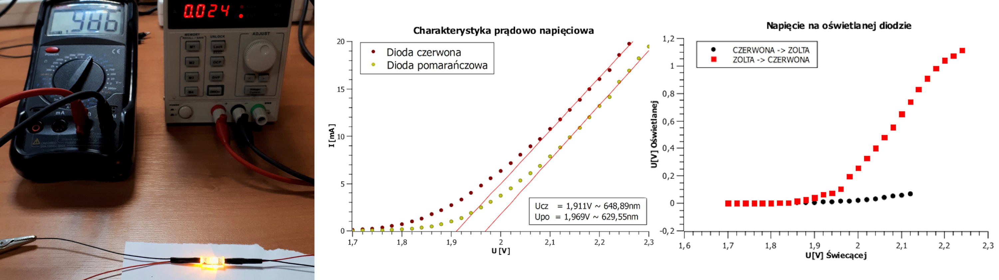

Each LED is simply a p-n junction that emits a photon when an electron falls to lower band state. Photovoltaic works on the same principal but the energy gap is much smaller which allows for longer wavelengths to be absorbed. Simply put a solar panel is a LED that is not very efficient in emitting light and LED is a solar panel not efficient at absorbing light. We can calculate the energy gap of p-n junction by making current-voltage characteristic. The band gap [eV] is equivalent of peak wavelength [nm] of a diode. Slope of the curve also shows the monochromaticity of diode if p-n junction is not covered by luminofore. I have measured band gap of a solar panel however it was made out of several smaller cells so the energy gap is unclear. I couldn’t get it to glow visibly in camera but the peak wavelength should be around 880nm.
With the right type of diode a reflectance sensor can be made. The current produced by illuminated diode is very small, so it can only be used as a measurement device. It can be observed that LED that emits lower wavelength produces much higher voltages when illuminated by the other. In theory it shouldn’t produce any voltage as the electron energy threshold is not met but emission peak is wide enough to produce light that is of higher energy.